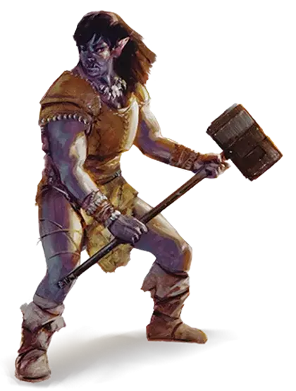

Полуорк
Half-orc

Вождь Муррен поднялся с мехов, на которых он лежал со своими женщинами, и натянул короткую кольчугу из тяжёлых стальных колец на свой мощный мускулистый торс. Обычно он вставал раньше своих воинов, так как в нём была сильна примесь человеческих кровей, и он лучше переносил дневной свет. У Кровавых Черепов о воине судили по его силе, бесстрашию и уму. Человеческое происхождение — не недостаток для воина, при условии, что он был таким же сильным, выносливым и кровожадным, как его чистокровные собратья. Полуорки, которые были слабее, чем их собратья, недолго прожили бы среди Кровавых Черепов, как и в любом другом орочьем племени. Но часто оказывалось, что человеческая кровь давала воину правильное сочетание хитрости, амбиций и самодисциплины, чтобы добиться многого, как это сделал Муррен. Он был хозяином племени, которое могло насчитать две тысячи копий, и имело сильнейшего вождя в Таре.
— Ричард Бейкер, Маг меча
Находясь ли под предводительством могучего колдуна, или стараясь установить мир после многолетнего конфликта, орки и племена людей иногда заключали союзы, объединяя силы в огромные орды, терроризирующие более цивилизованные государства по соседству. Когда такие союзы скреплялись узами брака, появлялись полуорки. Некоторые полуорки возвышались, становясь гордыми вождями племён. Их человечья кровь давала им преимущество над их чистокровными соперниками. Другие отправлялись в мир, чтоб доказать своё превосходство над представителями более цивилизованных народов. Многие из них становились искателями приключений, достигая величия благодаря своим могучим свершениям, и дурной славы, благодаря варварским нравам и дикарской ярости.
Крепкие и покрытые шрамами
Серый цвет кожи, плоский лоб, выступающая челюсть, торчащие клыки и могучее телосложение не оставляет сомнений в орочьем происхождении для любого, кто смотрит на полуорка.
Орки гордятся своими боевыми шрамами, а узоры, составленные из шрамов, украшают их тела. Другие шрамы могут отмечать бывшего раба или изгнанника. Все полуорки, живущие с орками, или поблизости от них, имеют шрамы, следы унижений и поводы для гордости, отмечающие их победы и ранения. Живущие же среди людей полуорки могут как выставлять свои шрамы на обозрение с гордостью, так и со стыдом прятать их.
Метка груумша
Одноглазый бог Груумш создал орков, и даже те орки, кто отвернулся от поклонения ему, не могут полностью избежать его влияния. То же самое можно сказать и про полуорков, хотя их человеческая кровь и снижает воздействие орочьего наследия. Некоторые полуорки слышат шёпот Груумша в своих снах, взывающий высвободить ярость, что вскипает в них. Другие чувствуют ликование Груумша когда они вступают в бой и либо ликуют вместе с ним, либо трясутся от страха и ненависти. Полуорки по природе своей не являются злыми, но зло скрывается в них, принимают ли они его или сопротивляются ему.
В ярости Груумша полуорки чувствуют сильное возбуждение. Ярость не только ускоряет их пульс, она заставляет их тела пылать. Колкие оскорбления действуют на них как яд, и печаль истощает их силы. Но когда они смеются, то делают это громко и от души, и простые физические наслаждения — пиры, выпивка, борьба, барабанный бой и дикие пляски — наполняют их сердца радостью. Они, как правило, вспыльчивы, иногда угрюмы, более склонны к действию, чем к созерцанию и к борьбе, чем к спору. Наиболее культурными полуорками являются те, у кого достаточно самоконтроля, чтобы проживать в цивилизованных землях.
Племена и трущобы
Полуорки наиболее часто живут среди орков. Среди других рас люди наиболее терпимо принимают полуорков, поэтому полуорки, которые не живут среди орков, чаще всего живут среди людей. Заслуживая ли признание среди жестоких варварских племен, или борясь за выживание в трущобах крупных городов, полуорки достигают всего своей физической мощью, выносливостью и решительностью, унаследованной от человеческих предков.
Имена полуорков
Полуорки обычно имеют имена, соответствующие культуре, в которой они были выращены. Полуорк, который хочет находиться среди людей, может поменять орочье имя на человеческое. Некоторые полуорки с человеческими именами решают принять гортанное орочье имя, потому что считают, что это сделает их более устрашающими.
Мужские орочьи имена: Гел, Денч, Имш, Кет, Краск, Муррен, Ронт, Токк, Фенг, Хенк, Холг, Шамп.
Женские орочьи имена: Багги, Вола, Волен, Евельда, Кансиф, Мев, Нига, Овак, Оунка, Сута, Шаута, Эмен, Энгонг.
Неприязненное отношение
Каждый полуорк находит способ, как добиться признания тех, кто ненавидит орков. Некоторые из них скрытны, и стараются не привлекать к себе никакого внимания. Некоторые из них демонстрируют благочестие и добросердечность настолько публично, насколько это возможно (независимо от того, насколько искренни эти демонстрации). А некоторые просто стараются быть настолько жестокими, что остальные просто избегают их.
Особенности полуорков
Благодаря орочьему происхождению, ваш персонаж-полуорк обладает следующими особенностями.
Увеличение характеристик. Значение вашей Силы увеличивается на 2, а значение Телосложения увеличивается на 1.
Возраст. Полуорки взрослеют немного быстрее людей, достигая зрелости к 14 годам. Стареют они заметно быстрее, и редко живут дольше 75 лет.
Мировоззрение. Любое.
Размер. Полуорки несколько выше и массивнее людей. Их рост находится в промежутке от 5 до сильно выше 6 футов. Ваш размер — Средний.
Скорость. Ваша базовая скорость ходьбы составляет 30 футов.
Тёмное зрение. Благодаря орочьей крови, вы обладаете превосходным зрением в темноте и при тусклом освещении. На расстоянии в 60 футов вы при тусклом освещении можете видеть так, как будто это яркое освещение, и в темноте так, как будто это тусклое освещение. В темноте вы не можете различать цвета, только оттенки серого.
Угрожающий вид. Вы получаете владение навыком Запугивание.
Непоколебимая стойкость. Если ваши хиты опустились до нуля, но вы при этом не убиты, ваши хиты вместо этого могут опуститься до 1. Вы не можете использовать эту способность снова, пока не завершите продолжительный отдых.
Свирепые атаки. Если вы совершили критическое попадание рукопашной атакой оружием, вы можете добавить к итоговому урону еще одну кость урона этого оружия.
Языки. Вы можете говорить, читать и писать на Общем и Орочьем языках. Орочий язык резкий и грубый, полный твёрдых согласных. Он не имеет собственного алфавита и использует дварфский.
Разновидности. В мультивселенной D&D существуют различные виды полуорков. С разрешения вашего Мастера вы можете выбрать один из них.
Метка поиска (RLW)
Источник: Eberron: Rising from the Last War
Метка Поиска обостряет чувства, направляя охотника к добыче. Единственная среди Меток Дракона, принадлежащая двум расам: людям и полуоркам. Впервые она появилась в Теневом Пограничье, где охотники кланов использовали её, для поиска своей добычи.
Дом Тарашк
Лидер: Триумвират (Маагрим Торм, Хандар’аашта, Дарик Велдеран)
Штаб-квартира: Зараш’ак, Теневое Пограничье
Дом Тарашк традиционно лицензирует сыщиков и охотников за головами. В последнее время Гильдия Искателей дома расширилась и занялась поисками драконьих осколков.
Поскольку осколки драконов являются источником магической экономики, способность Дома дала им новое богатство и влияние.
Тарашк - самый молодой из Домов Отмеченных Драконом, и он еще не усвоил всех принятых обычаев. Различные кланы, объединившиеся, чтобы сформировать Дом, сохраняют своё влияние, и наследники семей обычно сохраняют свои семейные имена, а не принимают «д’Тарашк», как того требует традиция. Каждый из трех главных кланов - Аашта, Торм и Велдеран имеют своего представителя в Триумвирате, который управляет Домом, и городом Зараш’ак в Теневом Пограничье. Вместе они выступают как единое целое под гербом драконны (гибриде льва и дракона).
Если ваш персонаж-полуорк обладает меткой поиска, следующие особенности заменяют расовые особенности персонажа из «Книги Игрока», за исключением возраста, мировоззрения, размера и скорости.
Увеличение характеристик. Значение вашей Мудрости увеличивается на 2, а значение Телосложение на 1.
Тёмное зрение. Вы можете видеть в тусклом свете на 60 футов, как если бы это был яркий свет, а также в темноте, если бы это был тусклый свет. Вы не можете различать цвета в темноте, вам видны лишь оттенки серого.
Интуиция охотника. Совершая проверку Мудрости (Восприятие или Выживание), вы можете добавить к4 к результату проверки.
Магия искателя. Вы можете накладывать заклинание метка охотника [hunter’s mark] с помощью этой особенности. Начиная с 3-го уровня, вы можете накладывать заклинание поиск предмета [locate object] с помощью этой особенности.
После накладывания одного из этих заклинаний с помощью особенности вы должны закончить продолжительный отдых, прежде чем сможете вновь наложить его таким образом. Базовой характеристикой для этих заклинаний является Мудрость.
Языки. Вы можете говорить, читать и писать на Общем и Гоблинском языках.
Заклинания метки. Если вы владеете умением «Использование заклинаний» или «Магией договора», то заклинания из таблицы «Заклинания метки поиска» добавляются в список заклинаний вашего класса заклинателя.